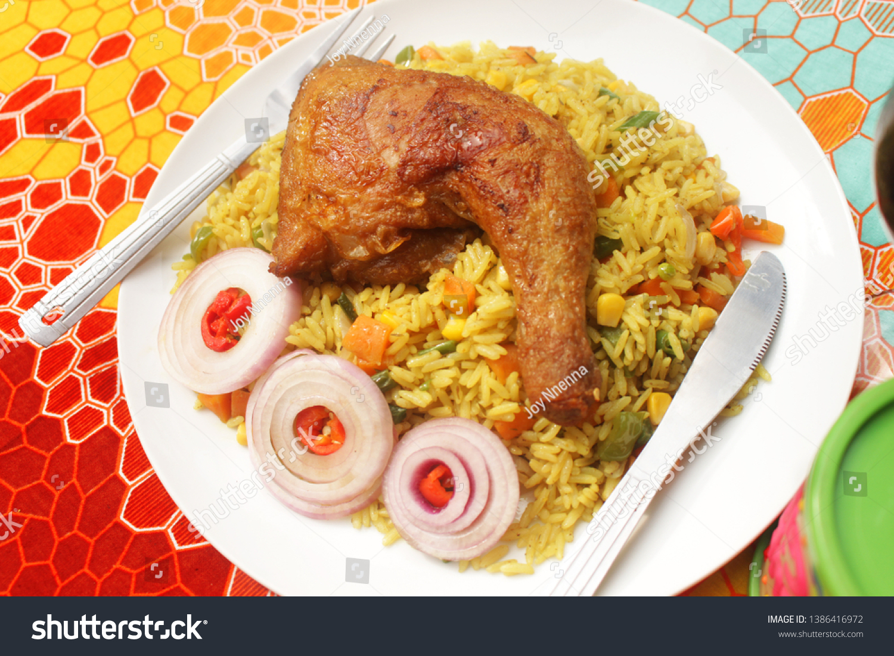

friedrice

Ingredients
- rice
- curry
- bayleaf
- carrot
- green pea
- vegetable oil
- onion
- chicken meat
Steps
- Use day-old or cooled rice for best texture
- Dice vegetables (carrots, peas, onions), proteins (egg, chicken, shrimp, etc.), and aromatics (garlic, ginger).
- In a wok or large pan over medium-high heat.
- Push to the side or remove once cooked.
- Add garlic, onion, and other veggies; cook until tender.
- Stir-fry until cooked through.
- Break up clumps; toss everything together.
- Add soy sauce, oyster sauce, sesame oil, salt, and pepper to taste.
- Mix in the scrambled eggs and green onions.
- Serve hot
This is the Nigeria fried rice recipe, it's a combination of rice, carrot, green pea, con beef, and fried chicken
I recommend that you eat warm and with a chill drink, am sure you will thank me
homepage